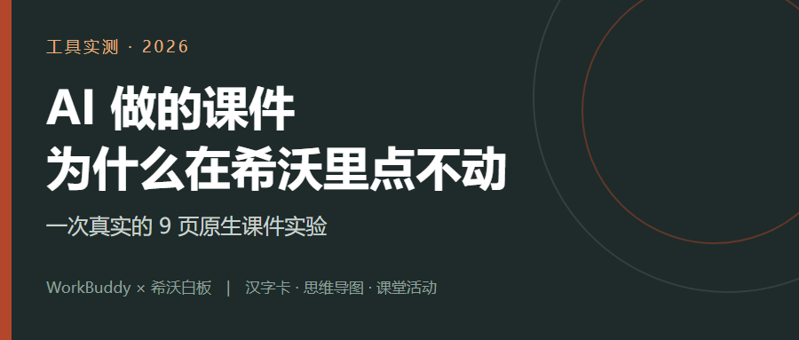
很多老师第一次用 AI 做课件，都会卡在同一个地方。
PPT 生成得挺漂亮，导进希沃白板也没报错。可一到课堂上：点汉字卡，没反应；点思维导图，不会展开；「课堂活动」那一页，就是一张截图。
于是有了一句很真实的吐槽：看着像课件，用起来像图片。
问题不在 AI 不聪明，也不在希沃不兼容，而在交付的那一步。PPTX 是通用格式，而希沃的汉字卡、思维导图、课堂活动是客户端里的原生元素——它们不是图片，也不是普通形状。一旦走「生成 PPT → 再导入」这条路，就会被压平成静态内容。
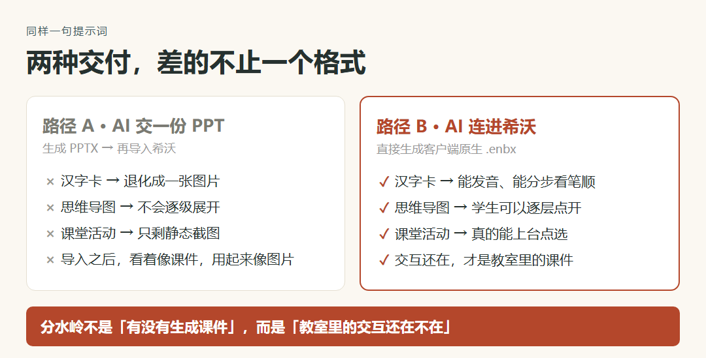
我用的是 WorkBuddy 里的希沃白板助手技能。它不导 PPT，而是通过本地 MCP 直接连到希沃客户端，把内容写成 .enbx 原生课件。
链路很短：一句课题 → WorkBuddy → 本地 MCP（127.0.0.1:7916）→ 希沃客户端。
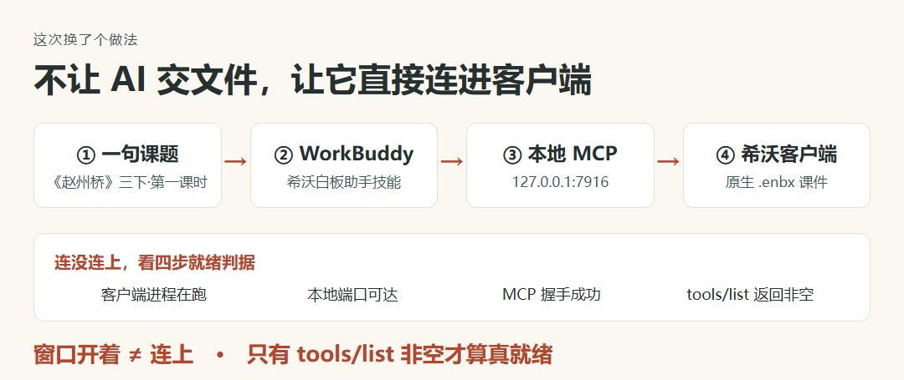
这里有个坑值得单独说：窗口开着 ≠ 连上。
我第一次试的时候，希沃进程明明在跑，五个候选端口却一个都没监听，返回的是 login_required。客户端重启之后，端口才通、tools/list 才返回非空，连接才算真就绪。
判据就四步：进程在跑 → 端口可达 → MCP 握手成功 → 工具列表非空。少一步都别急着生成。这一步没打通，后面做出来的东西再漂亮，也只是躺在文件夹里的一个文件。
按技能的四阶段走：
① 基本信息——课题、学段、页数区间、图片方案、硬约束；
② 教学目标——按新课标对齐，写清素养指向与检测方式；
③ 大纲设计——先选原生组件，再排教学环节，逐环节回看目标；
④ 分段生成——补内容 → 校验 → 出图 → 生成 → 回读。
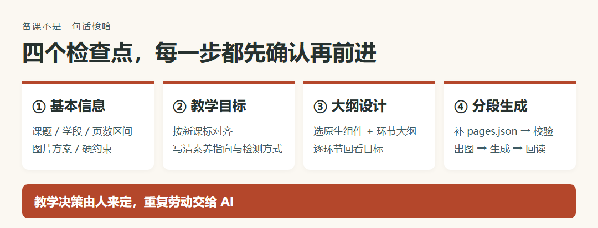
每一步确认了才往下一步走。这次选的是人教版三年级下册《赵州桥》第一课时，9 页，其中 8 页有原生背景。
有意思的是：教学目标和结构一定下来，剩下的排版、配色、出图、写坐标、算对比度，全交给 AI。教学决策由人定，重复劳动交给 AI——这才是分工该有的样子。
9 页里，最值得看的是四页「希沃才有的东西」：
汉字卡：「匠 / 慧 / 赵」三个字。拼音、笔画数、部首、田字格，全是组件从本地汉字库带出来的，不是我写死在页面上的静态文字。
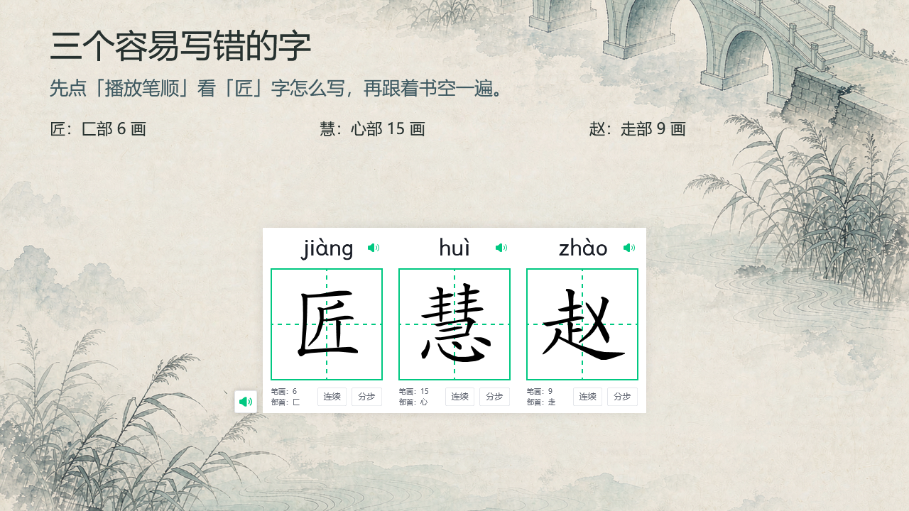
对照表：第 2、3 自然段的关键句同构并置，一眼看出「中心句」和「过渡句」的差别。
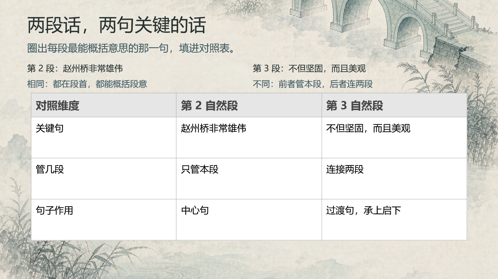
思维导图：总分总三支逐级展开，学生可以自己点开看。
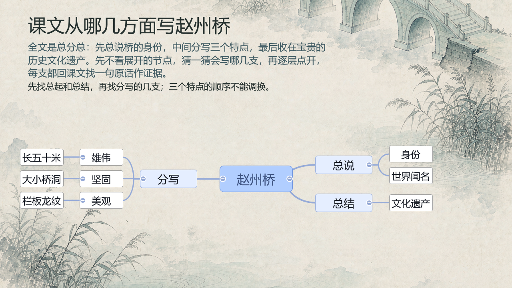
判断对错：5 道题，3 对 2 错，专挑「四个小桥洞是为了更好看」「不但…而且…是全文中心句」这两个高频易错点。
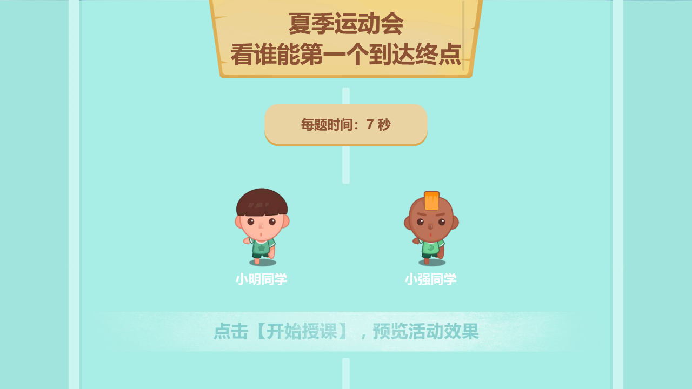
另外，8 页背景是三张同源水墨图，镜头从远看桥、到近观结构、再到细察纹样，跟教学推进是同一条线。这里也踩了个小坑：AI 出图右下角自带水印，按 16:9 物理裁切时正好一起裁掉。
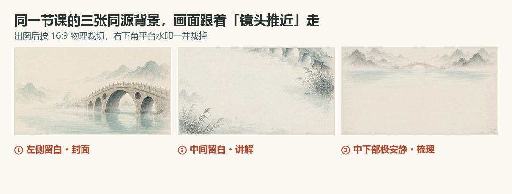
这个问题必须说清楚，不然前面都白讲。
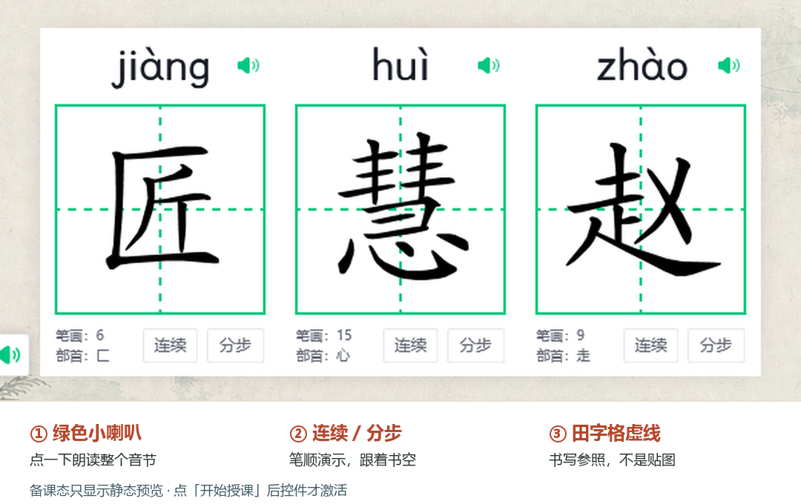
我回读了客户端：那个元素的类型是 HanziCard，在页面信息里叫「汉字卡片.1」，不是「图片.1」。放大看，每个字上方有绿色小喇叭，下方有「连续 / 分步」两个按钮——能朗读音节，能逐笔演示笔顺。
但有个前提：要点「开始授课」。备课态只显示静态预览，交互进授课模式才激活。这也是为什么我给的截图里，那些按钮看着像画上去的。判断活动页同理，备课态显示的是希沃模板封面，授课时才逐题出 5 道题。
顺便说实话：它朗读的是整个音节（jiàng），不做 j—i—àng 这种声母韵母分解拼读，也不带组词释义。三年级这一课要的是「认读 + 看清笔顺」，拼读分解属于低年级正音，不该硬塞进来。工具能力有边界，说清楚比吹满更有用。
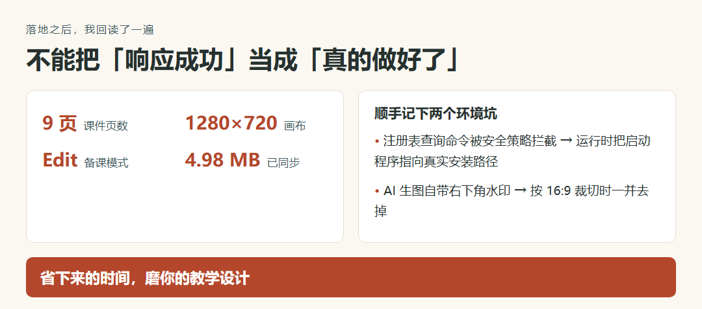
生成日志说成功，不等于课件落地了。我又独立回读了一遍：9 页、1280×720、备课 Edit 模式、4.98 MB、已同步，用「赵州桥」能在希沃课件库里检索到。
路上还踩了两个环境坑：⚠️ 注册表查询命令被安全策略拦截，导致脚本找不到希沃的启动程序——改成运行时直接指向真实安装路径就通了；再就是刚才那个水印。都不影响教学，但会让人卡半天，记下来给后面的人省点时间。
所以回到开头那个问题：AI 做的课件，为什么点不动？
因为它交的是一份关于课件的文件，而不是教室里的课件。
真正的分水岭，从来不是有没有生成那 9 页，而是汉字还能不能读、导图还能不能展开、学生还能不能上台点一下。
省下来的时间，磨你的教学设计。
💬 你们学校用希沃时，最想让 AI 直接生成哪一类原生组件？留言聊聊。